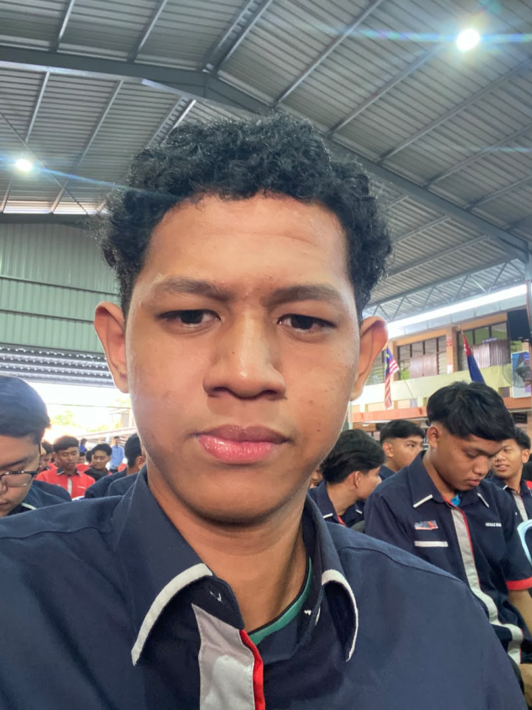

Hai, Saya Eddy Al Haq
Pelajar Diploma Teknologi Rangkaian Komputer dari Kolej Vokasional Kluang. Mempunyai minat mendalam dalam Pengurusan Rangkaian, Web Development, Programming & Multimedia.

Eddy Al Haq
KV Kluang Alumni / Trainee
Rangkaian Komputer
Kemahiran Cisco Packet Tracer, Subnetting IPv4, Routing & Switching.
Web & Programming
Membina laman web responsif menggunakan HTML, CSS, JavaScript & Tailwind.
Information Tech
Penyelenggaraan sistem, Server Windows/Linux, dan Troubleshooting IT.
Multimedia
Reka bentuk grafik digital & penyuntingan media untuk pelbagai platform.
Video Projek
Rakaman dan hasil kerja multimedia Eddy Al Haq.
Profil & Mengenai Saya
Biodata peribadi, latar belakang, dan falsafah kerja.
Maklumat Peribadi
- Nama Penuh Eddy Al Haq Bin Eddy Nor
- Bidang Pengajian Teknologi Rangkaian
- Institusi KV Kluang, Johor
- Warganegara Malaysia
- Bahasa Bahasa Melayu, English
Biografi Ringkas
Saya Eddy Al Haq Bin Eddy Nor, seorang pelajar yang amat berminat dan berdedikasi dalam bidang Teknologi Rangkaian Komputer dan pembangunan perisian digital di Kolej Vokasional Kluang. Berteraskan pendidikan teknikal dan vokasional (TVET), saya terlatih secara amali untuk memahami ekosistem infrastruktur IT dari skema penghubung rangkaian sehingga kepada pembangunan sistem web.
Bagi saya, gabungan kebolehan menyelenggara rangkaian fizikal/logikal dan membina perisian interaktif adalah kekuatan utama untuk menyelesaikan pelbagai cabaran teknologi moden.
Falsafah Kerja & Nilai Peribadi
Adaptabiliti High-Tech
Sentiasa bersedia mempelajari alatan & protokol baharu dalam arus pesat IT.
Integriti & Keselamatan
Mengutamakan aspek keselamatan data dan konfigurasi rangkaian yang stabil.
Kemahiran & Kepakaran
Tahap penguasaan teknikal dalam pelbagai domain IT & Rangkaian.
Rangkaian Komputer
Pembangunan Web & Pengaturcaraan
Sokongan Teknologi Maklumat (IT)
Multimedia & Rekabentuk
Latar Belakang Pendidikan
Institusi pengajian dan pencapaian akademik.
Diploma Teknologi Rangkaian Komputer
Fokus pengajian kepada infrastruktur rangkaian enterprise, keselamatan siber asas, pentadbiran pelayan (Server Administration), serta pembangunan perisian web sokongan.
Mata Pelajaran Utama:
Sijil Vokasional Malaysia (SVM) Rangkaian Komputer
Pendedahan asas menyeluruh mengenai pemasangan perkakasan PC, pengabelan struktur UTP, konfigurasi penghala (router) serta pembaikan gangguan sistem komputer.
Pencapaian & Sijil Kemahiran
Sijil Amali Rangkaian
Penilaian Amali KV Kluang
Projek Akhir Rangkaian
Reka Bentuk Topologi Kampus
Bengkel Web & IT
Penyertaan Aktiviti Teknikal
 Rangkaian
Rangkaian
Topologi Kampus KV Kluang
Konfigurasi Cisco Packet Tracer menggabungkan VLAN, OSPF Routing, & Server Inter-VLAN.
 Web Dev
Web Dev
Portal Maklumat Pelajar
Laman web pengurusan maklumat pelajar mudah alih berpandukan reka bentuk antaramuka moden.
 Rangkaian / IT
Rangkaian / IT
Linux Ubuntu Web Server Setup
Pemasangan dan konfigurasi Apache Web Server & SSH Remote Management pada Linux.
 Multimedia
Multimedia
Video Montage Vokasional
Penyuntingan video montaj aktiviti makmal teknologi rangkaian menggunakan Adobe Premiere.
 Web Dev
Web Dev
IP Subnetting Calculator
Alat web mudah untuk mengira Subnet Mask, Network ID & Broadcast Address.
Pengalaman Amali & Industri
Latihan amali, projek teknikal, dan tugasan lapangan.
Amali Pemasangan & Maintenance Makmal
Kolej Vokasional Kluang
- Melakukan kerja-kerja pengabelan UTP (Crimping Cat5e/Cat6, Patch Panel).
- Menguruskan susunan kabel (Cable Management) di dalam Rack Server makmal.
- Troubleshooting gangguan sambungan Internet pada PC pelajar & pensyarah.
Konfigurasi Peranti Network Cisco
Sesi Latihan Kurikulum
- Mengisi tetapan asas CLI pada Router dan Switch Cisco (Hostname, Password, SSH).
- Membuat pembahagian Virtual LAN (VLAN) untuk mengurangkan lalu lintas broadcast.
- Menjalankan pengujian ping, traceroute, dan analisis paket data.
Matlamat Kerjaya
Hala tuju profesional dan sasaran 3-5 tahun akan datang.
Pentadbir Rangkaian
Mengurus infrastruktur rangkaian syarikat agar sentiasa selamat dan berprestasi tinggi.
Pembangun Web Junior
Membina dan mengekalkan sistem web interaktif mesra pengguna.
Eksekutif Sokongan IT
Memberikan bantuan teknikal perisian, perkakasan, dan isu sistem secara profesional.
Pelan Pembangunan Kerjaya (Roadmap)
Pengukuhan Asas & Pengalaman
Menyertai industri sebagai Sokongan Rangkaian/IT Junior. Mengambil persijilan profesional Cisco CCNA.
Spesialisasi Sistem & Cyber
Mendalami aspek keselamatan rangkaian (Keselamatan Rangkaian) & Pentadbiran Pelayan (Linux/Cloud).
Pakar Rangkaian Kanan
Memimpin perancangan seni bina rangkaian (Network Architecture) dan pengurusan infrastruktur IT besar.
Hubungi Saya
Mari berbincang mengenai peluang kerjaya, projek, atau kolaborasi teknikal.